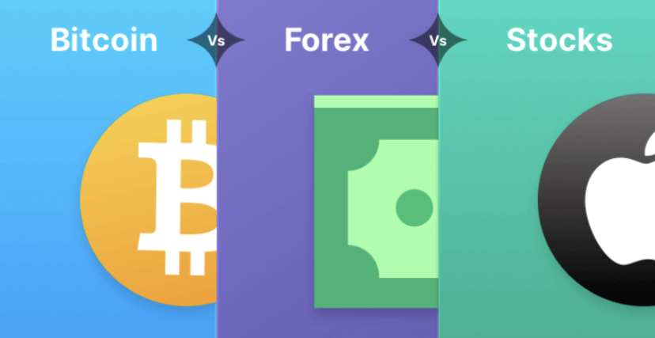
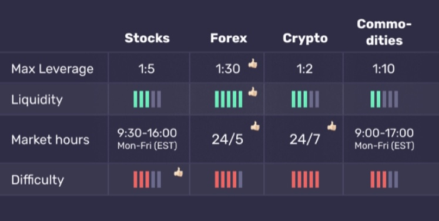
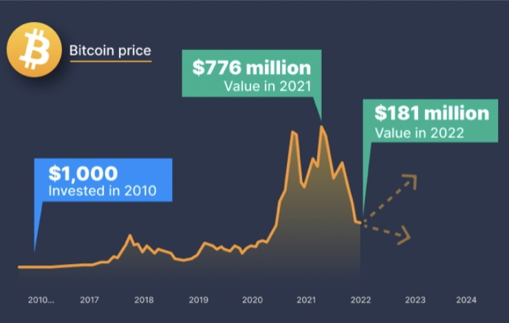
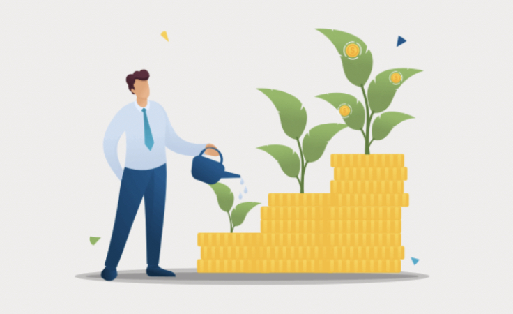
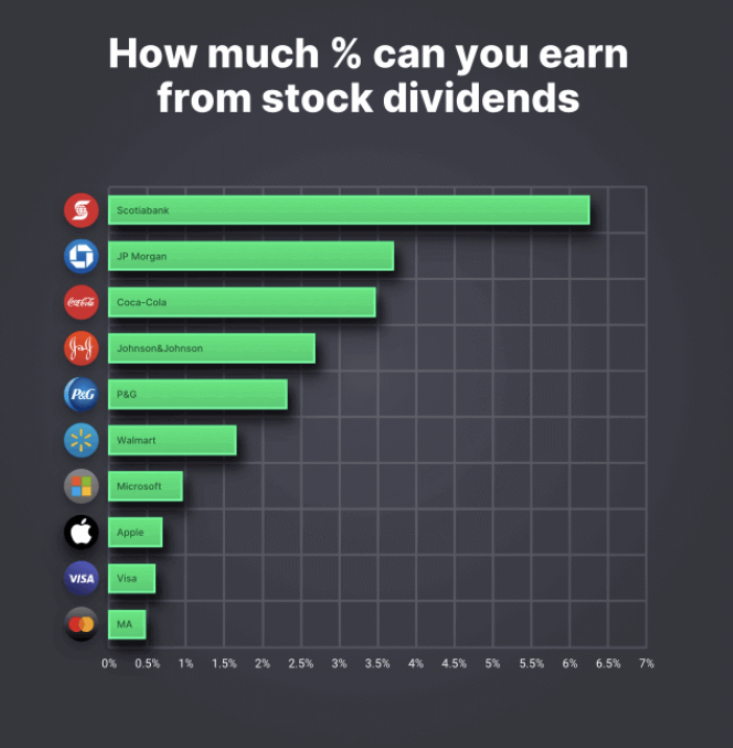

What's better for you - Forex, Stocks or Crypto?
If your dream is to make a living while trading from a hammock somewhere in Bali...
You should probably forget about forex and stocks.
Why?
Because the best time for trading forex is usually from 8:00 AM -
11:00 AM New York's time. And by that time it's 21:00 - 24:00 in Bali. The US stock market also opens at 9:00 AM in New York, when it's 10:00 PM in Bali. And the stock market closes at 5:00 AM Bali
time.
People who try to trade stocks from Bali often ruin their daily rhythm and health.
A better option in similar time zones would be to trade crypto as the cryptocurrency markets are open 24 hours, 7 days a week. Also, you could trade Asian currencies, although it would be much harder for a beginner.
Bottom line: Your location and time zone matters when choosing what to trade.
There are multiple other factors that differentiate various assets, not just the market hours.
Here's a simplified overview of the main ones:

Let's uncover the main differences between the most popular asset classes.
1. Are you open for explosive moves?
Nothing has made new millionaires faster and easier than crypto in recent years.
Looking at the historical Bitcoin chart, you can see that the growth was astonishing... until it stopped and dropped in 2022.

Past performance is not indicative of future results.
As you can see in the chart, if you invested $1,000 in Bitcoin in 2010, you would have made ~$776 million if you cashed it out in 2021! Ok, you'd likely have panic-sold in the first big drop of 2018 and made less, but still, you'd be a millionaire.
The crypto market drop of 2022 served as a chilling reminder of how volatile and unpredictable digital currencies can be.
You might wonder - when will Bitcoin and other solid cryptocurrencies reach bottom and start to recover?
Nobody knows.
However, it's very likely that it will eventually rebound and this drop will offer new opportunities for future growth.
The passion of crypto enthusiasts and the potential of blockchain technologies is too big to be held down forever.
2. Are you looking to gradually grow your capital with less risk?

If you don't have a high risk tolerance and want to grow your money for retirement, Forex is NOT FOR YOU! In this case, you'd be better off investing in stocks or collections of stocks (ETF's).
Stocks rarely make millionaires as fast as crypto has done so far. But they are way more stable and predictable.
It's also quite unlikely to lose all your money if you go with the stocks of big names. There's not a big chance that Google, Apple, or Amazon will get wiped out entirely in a short period.
One of the best things about stock trading is that you can make money in two ways - from price growth AND from dividends.
Here is an example of how much dividends popular companies pay to their shareholders:

Are you interested in dipping your toes in stock investing, but don't want to pay high commissions?
3. Are you interested in fast results but with some relative stability?

In this case, Forex trading might be suited for you.
Compared to stock investing, forex trading is more like gambling, but with increased odds of success for those who learn diligently and do proper risk management.
It's impossible to have a bulletproof forex strategy that always wins, but the chances increase the more you learn about economics, market psychology, politics, finance, and technical analysis.
And it's a marvelous feeling when you can pull together successful insights from all these disciplines.
You will feel like you are starting to see the hidden market patterns and signals every time you read financial news.
Let's proceed and uncover the best and the worst times for trading!